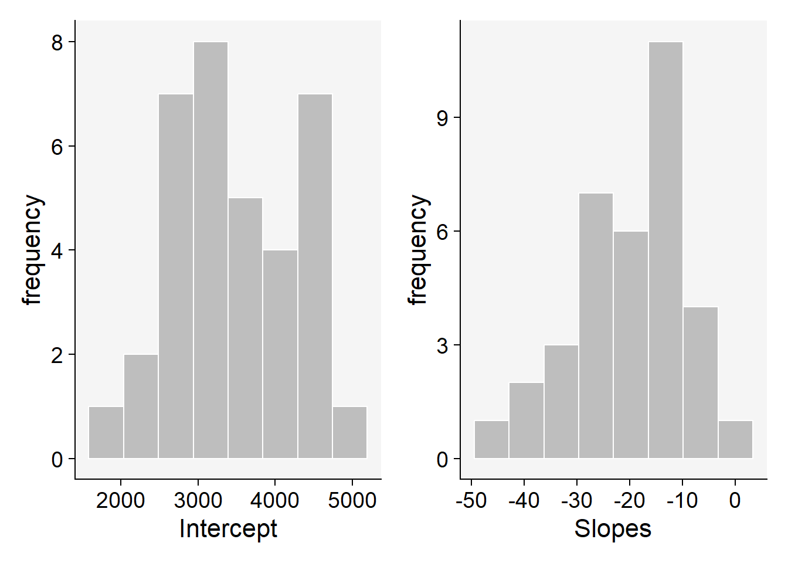
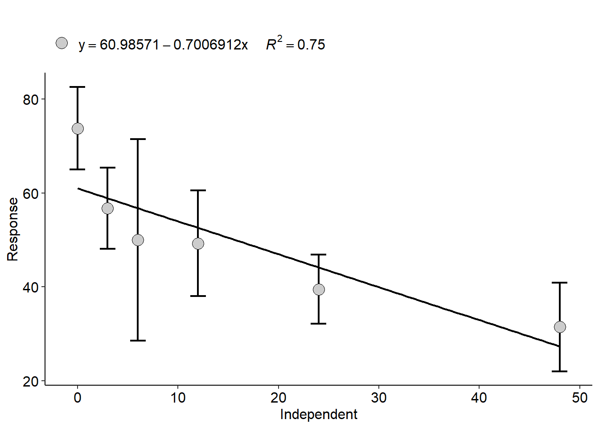

library(tidyverse)
library(lme4)
library(car)Regressão
Pacotes
Regressão linear
A regressão é uma técnica estatística utilizada para modelar e analisar a relação entre uma variável dependente (ou resposta) e uma ou mais variáveis independentes (ou preditoras). O objetivo principal da regressão é entender como a variável dependente varia quando as variáveis independentes mudam e usar essa compreensão para fazer previsões.
Importação dos dados
O conjunto de dados foi importado a partir do Google Sheet através da função gsheet2tbl() do pacote gsheet.
Esse conjunto de dados é composto pelo trat, que é o percentual de sementes inoculados com patógenos e nplants, que é o número de plantas emergidas no campo. Estima-se que o aumento da concentração de inóculo irá diminuir a estande de plantas no cmapo. O fator de concentração de inóculo é um fator numérico contínuo.
library(gsheet)
estande <- gsheet2tbl("https://docs.google.com/spreadsheets/d/1bq2N19DcZdtax2fQW9OHSGMR0X2__Z9T/edit#gid=401662555")Visualização dos dados
Foram criados gráficos de pontos com intervalos de confiança. Os gráficos foram criados usando as funções ggplot(), geom_jitter() e stat_summary (para criar os pontos médios e intervalos de confiança).
Também foi usada a função geom_smooth() com o argumento method = "lm" para criar uma linha de tendência no gráfico ajustado ao modelo linear, mostrando a tendência que os dados possuem de aumentar ou diminuir em função do eixo X.
estande |>
ggplot(aes(trat, nplants))+
geom_jitter(width = 0.1, color = "gray")+
facet_wrap(~exp)+
stat_summary(fun.data = "mean_cl_boot", color = "blue")+
geom_smooth(method = "lm", se = F)estande |>
ggplot(aes(trat, nplants, color = factor(exp)))+
geom_jitter(width = 0.1, color = "gray")+
stat_summary(fun.data = "mean_cl_boot", color = "blue")+
geom_smooth(method = "lm", se = F)Regressão linear do experimento 1
Inicialmente foi filtrado apenas o experimento 1 do conjunto de dados usando a função filter().
exp1 <- estande |>
filter(exp == 1)Depois foi plotado um gráfico do experimento 1 usando as funções ggplot(), geom_point() e geom_smooth() (dessa vez sem nenhum ajuste de modelo).
exp1 |>
ggplot(aes(trat, nplants))+
geom_point()+
ylim(0,100)+
geom_smooth(se = F)
Pode-se observar pelo gráfico que a linha de tendência se assemelha a uma reta (modelo linear).
Para ajustar os dados em um modelo linear, foi usada a função lm().
lm1 <- lm(nplants ~ trat,
data = exp1)
summary(lm1)
Call:
lm(formula = nplants ~ trat, data = exp1)
Residuals:
Min 1Q Median 3Q Max
-25.500 -6.532 1.758 8.573 27.226
Coefficients:
Estimate Std. Error t value Pr(>|t|)
(Intercept) 52.5000 4.2044 12.487 1.84e-11 ***
trat -0.2419 0.1859 -1.301 0.207
---
Signif. codes: 0 '***' 0.001 '**' 0.01 '*' 0.05 '.' 0.1 ' ' 1
Residual standard error: 15 on 22 degrees of freedom
Multiple R-squared: 0.07148, Adjusted R-squared: 0.02928
F-statistic: 1.694 on 1 and 22 DF, p-value: 0.2066A partir da função summary(), é possível inferir que a taxa de redução da variável resposta em função do eixo X é de -0.24, ou seja, para cada unidade de X reduz o Y em -0.24.
Além disso, o p-valor é informado, sendo igual a 0.2066, ou seja, é superior ao nível de significância e não se pode rejeitar a hipótese nula (Ho: a taxa de redução é igual a 0).
Outra alternativa para realizar a regressão linear é usando a função glm() e o argumento family = "gaussian".
glm1 <- glm(nplants ~ trat,
family = "gaussian",
data = exp1)
summary(glm1)
Call:
glm(formula = nplants ~ trat, family = "gaussian", data = exp1)
Coefficients:
Estimate Std. Error t value Pr(>|t|)
(Intercept) 52.5000 4.2044 12.487 1.84e-11 ***
trat -0.2419 0.1859 -1.301 0.207
---
Signif. codes: 0 '***' 0.001 '**' 0.01 '*' 0.05 '.' 0.1 ' ' 1
(Dispersion parameter for gaussian family taken to be 224.9751)
Null deviance: 5330.5 on 23 degrees of freedom
Residual deviance: 4949.5 on 22 degrees of freedom
AIC: 202
Number of Fisher Scoring iterations: 2A família gaussiana envolve o mesmo método do “lm”, resultando na mesma taxa de redução.
Regressão linear do experimento 2
Inicialmente foi filtrado apenas o experimento 2 do conjunto de dados usando a função filter().
exp2 <- estande |>
filter (exp == 2)O mesmo gráfico foi montado para o experimento 2.
exp2 |>
ggplot(aes(trat, nplants))+
geom_point()+
ylim(0,100)+
geom_smooth(method = lm, se = F)
Pelo gráfico é possível observar uma diminuição dos valores de Y em função do eixo X.
lm2 <- lm(nplants ~ trat,
data = exp2)
summary(lm2)
Call:
lm(formula = nplants ~ trat, data = exp2)
Residuals:
Min 1Q Median 3Q Max
-25.7816 -7.7150 0.5653 8.1929 19.2184
Coefficients:
Estimate Std. Error t value Pr(>|t|)
(Intercept) 60.9857 3.6304 16.798 4.93e-14 ***
trat -0.7007 0.1605 -4.365 0.000247 ***
---
Signif. codes: 0 '***' 0.001 '**' 0.01 '*' 0.05 '.' 0.1 ' ' 1
Residual standard error: 12.95 on 22 degrees of freedom
Multiple R-squared: 0.4641, Adjusted R-squared: 0.4398
F-statistic: 19.05 on 1 and 22 DF, p-value: 0.0002473O resultado do modelo linear indica que a taxa de redução desses dados é de -0.70, ou seja, para cada unidade de X reduz o Y em -0.70.
Nesse experimento nota-se que o p-valor foi inferior ao nível de significância, indicando que a hipótese nula de que a taxa de redução é igual a 0 é rejeitada, ou seja, há uma regressão.
Ajustando o modelo pelo método do GLM, pode ser utilizado duas famílias: family = "gaussian" e family = "log".
glm2 <- glm(nplants ~ trat,
family = "gaussian",
data = exp2)
summary(glm2)
Call:
glm(formula = nplants ~ trat, family = "gaussian", data = exp2)
Coefficients:
Estimate Std. Error t value Pr(>|t|)
(Intercept) 60.9857 3.6304 16.798 4.93e-14 ***
trat -0.7007 0.1605 -4.365 0.000247 ***
---
Signif. codes: 0 '***' 0.001 '**' 0.01 '*' 0.05 '.' 0.1 ' ' 1
(Dispersion parameter for gaussian family taken to be 167.7464)
Null deviance: 6886.6 on 23 degrees of freedom
Residual deviance: 3690.4 on 22 degrees of freedom
AIC: 194.96
Number of Fisher Scoring iterations: 2AIC(glm2)[1] 194.9597glm2b <- glm(nplants ~ trat,
family = poisson(link = "log"),
data = exp2)
summary(glm2b)
Call:
glm(formula = nplants ~ trat, family = poisson(link = "log"),
data = exp2)
Coefficients:
Estimate Std. Error z value Pr(>|z|)
(Intercept) 4.134189 0.037583 110.003 < 2e-16 ***
trat -0.016270 0.002059 -7.901 2.76e-15 ***
---
Signif. codes: 0 '***' 0.001 '**' 0.01 '*' 0.05 '.' 0.1 ' ' 1
(Dispersion parameter for poisson family taken to be 1)
Null deviance: 139.783 on 23 degrees of freedom
Residual deviance: 69.578 on 22 degrees of freedom
AIC: 210.24
Number of Fisher Scoring iterations: 4AIC(glm2b)[1] 210.2353A função AIC() compara os dois métodos (famílias diferentes) e fornece qual deles melhor representa o conjunto de dados. Sempre o menor valor é o mais recomendado. Nesse caso, usando a família gaussiana, o valor de AIC foi menor, sendo o modelo que melhor representa os dados.
Regressão linear do experimento 3
Inicialmente foi filtrado apenas o experimento 3 do conjunto de dados usando a função filter().
exp3 <- estande |>
filter (exp == 3)O mesmo gráfico foi montado para o experimento 3.
exp3 |>
ggplot(aes(trat, nplants))+
geom_point()+
ylim(0,100)+
geom_smooth(method = lm, se = F)Pelo gráfico é possível observar uma diminuição dos valores de Y em função do eixo X.
lm3 <- lm(nplants ~ trat,
data = exp3)
summary(lm3)
Call:
lm(formula = nplants ~ trat, data = exp3)
Residuals:
Min 1Q Median 3Q Max
-26.5887 -3.9597 0.7177 5.5806 19.8952
Coefficients:
Estimate Std. Error t value Pr(>|t|)
(Intercept) 95.7500 2.9529 32.425 < 2e-16 ***
trat -0.7634 0.1306 -5.847 6.97e-06 ***
---
Signif. codes: 0 '***' 0.001 '**' 0.01 '*' 0.05 '.' 0.1 ' ' 1
Residual standard error: 10.53 on 22 degrees of freedom
Multiple R-squared: 0.6085, Adjusted R-squared: 0.5907
F-statistic: 34.19 on 1 and 22 DF, p-value: 6.968e-06O resultado do modelo linear indica que a taxa de redução desses dados é de -0.76, ou seja, para cada unidade de X reduz o Y em -0.76.
Nesse experimento nota-se que o p-valor foi inferior ao nível de significância, indicando que a hipótese nula de que a taxa de redução é igual a 0 é rejeitada, ou seja, há uma regressão.
O coeficiente de determinação (adjusted R-squared) fornecido é igual a 59%, o que indica que 59% da variabilidade do Y (número de plantas) é explicado pelo X (inóculo), sendo o máximo desse coeficiente igual a 1.
glm3 <- glm(nplants ~ trat,
family = "gaussian",
data = exp3)
summary(glm3)
Call:
glm(formula = nplants ~ trat, family = "gaussian", data = exp3)
Coefficients:
Estimate Std. Error t value Pr(>|t|)
(Intercept) 95.7500 2.9529 32.425 < 2e-16 ***
trat -0.7634 0.1306 -5.847 6.97e-06 ***
---
Signif. codes: 0 '***' 0.001 '**' 0.01 '*' 0.05 '.' 0.1 ' ' 1
(Dispersion parameter for gaussian family taken to be 110.9787)
Null deviance: 6235.8 on 23 degrees of freedom
Residual deviance: 2441.5 on 22 degrees of freedom
AIC: 185.04
Number of Fisher Scoring iterations: 2AIC(glm3)[1] 185.0449glm3b <- glm(nplants ~ trat,
family = poisson(link = "log"),
data = exp3)
summary(glm3b)
Call:
glm(formula = nplants ~ trat, family = poisson(link = "log"),
data = exp3)
Coefficients:
Estimate Std. Error z value Pr(>|z|)
(Intercept) 4.571590 0.029539 154.762 < 2e-16 ***
trat -0.009965 0.001488 -6.697 2.13e-11 ***
---
Signif. codes: 0 '***' 0.001 '**' 0.01 '*' 0.05 '.' 0.1 ' ' 1
(Dispersion parameter for poisson family taken to be 1)
Null deviance: 77.906 on 23 degrees of freedom
Residual deviance: 29.952 on 22 degrees of freedom
AIC: 183.93
Number of Fisher Scoring iterations: 4AIC(glm3b) #melhor qualidade de ajuste, quanto menor é melhor (mais ajustado)[1] 183.9324Para esse conjunto de dados, a família log resultou em um menor valor de AIC, o que indica que esse modelo melhor representa os dados que a família gaussiana.
Transformando o log dos tratamentos, os dados ficam mais linearizados (diminui a curva).
exp3 |>
ggplot(aes(log(trat), nplants))+
geom_point()+
ylim(0,100)+
geom_smooth(se = F)Regressão linear geral
Pegandos os dados inteiros, foi realizado o ajuste do modelo usando o GLM tanto com a família gaussianda quanto por log e depois foi comparado os dois modelos com o AIC.
library(lme4)
glm4 <- glmer(nplants ~ trat + (trat|exp),
family = "gaussian",
data = estande)
summary(glm4)Linear mixed model fit by REML ['lmerMod']
Formula: nplants ~ trat + (trat | exp)
Data: estande
REML criterion at convergence: 580.8
Scaled residuals:
Min 1Q Median 3Q Max
-2.0988 -0.6091 0.1722 0.6360 1.9963
Random effects:
Groups Name Variance Std.Dev. Corr
exp (Intercept) 510.68405 22.5983
trat 0.05516 0.2349 -0.82
Residual 167.91303 12.9581
Number of obs: 72, groups: exp, 3
Fixed effects:
Estimate Std. Error t value
(Intercept) 69.7452 13.2146 5.278
trat -0.5687 0.1643 -3.462
Correlation of Fixed Effects:
(Intr)
trat -0.731
optimizer (nloptwrap) convergence code: 0 (OK)
Model failed to converge with max|grad| = 0.00274249 (tol = 0.002, component 1)AIC(glm4)[1] 592.8402glm4b <- glmer(nplants ~ trat + (trat|exp), #(trat|exp) é o efeito aleatório
family = poisson(link = "log"),
data = estande)
summary(glm4b)Generalized linear mixed model fit by maximum likelihood (Laplace
Approximation) [glmerMod]
Family: poisson ( log )
Formula: nplants ~ trat + (trat | exp)
Data: estande
AIC BIC logLik deviance df.resid
660.7 672.1 -325.4 650.7 67
Scaled residuals:
Min 1Q Median 3Q Max
-3.6247 -0.8083 0.1042 0.9601 3.6511
Random effects:
Groups Name Variance Std.Dev. Corr
exp (Intercept) 6.425e-02 0.253478
trat 1.602e-05 0.004003 -0.17
Number of obs: 72, groups: exp, 3
Fixed effects:
Estimate Std. Error z value Pr(>|z|)
(Intercept) 4.223397 0.147793 28.577 < 2e-16 ***
trat -0.010434 0.002538 -4.111 3.93e-05 ***
---
Signif. codes: 0 '***' 0.001 '**' 0.01 '*' 0.05 '.' 0.1 ' ' 1
Correlation of Fixed Effects:
(Intr)
trat -0.192AIC(glm4b)[1] 660.7282Usando a família gaussianda, nota-se que o AIC obtido foi menor, indicando que, no geral, esse modelo é o que melhor representa o conjunto de dados.
Regressão linear - conjunto de dados 2
Para uma nova regressão linear, um novo conjunto de dados foi importado a partir do pacote r4pde. O conjunto de dados é denominado de WhiteMoldSoybean.
A regressão linear será usada para prever a produtividade da soja em função da incidência do mofo branco.
library(r4pde)
wm <- WhiteMoldSoybeanVisualização dos dados
wm |>
ggplot(aes(inc, yld, group = factor(study)))+
geom_point()+
facet_wrap(~ study)+
geom_smooth(method = "lm", se = F)+
theme_minimal()
Regressão linear
mofo1 <- lm(yld ~ inc,
data = wm)
summary(mofo1)
Call:
lm(formula = yld ~ inc, data = wm)
Residuals:
Min 1Q Median 3Q Max
-1657.85 -594.50 -91.32 531.76 1693.15
Coefficients:
Estimate Std. Error t value Pr(>|t|)
(Intercept) 3299.619 56.451 58.451 < 2e-16 ***
inc -9.261 2.108 -4.393 1.45e-05 ***
---
Signif. codes: 0 '***' 0.001 '**' 0.01 '*' 0.05 '.' 0.1 ' ' 1
Residual standard error: 745.8 on 380 degrees of freedom
Multiple R-squared: 0.04833, Adjusted R-squared: 0.04582
F-statistic: 19.3 on 1 and 380 DF, p-value: 1.452e-05Ajustando o conjunto de dados ao modelo linear, foi obtido uma taxa de redução de -9.261.
library(broom)
mofo2 <- wm |>
group_by(study) |>
do(tidy(lm(.$yld ~ .$inc), conf.int = TRUE))
df<- mofo2 |>
filter(term == ".$inc")
mean(df$estimate)[1] -19.52932#Histograma da produtividade quando incidência é 0
p1 <- mofo2 |>
filter(term == "(Intercept)") |>
ggplot(aes(x = estimate))+
geom_histogram(bins = 8, color = "white", fill = "gray")+
theme_r4pde()+
labs(x = "Intercept", y = "frequency")
p2 <- mofo2 |>
filter(term == ".$inc") |>
ggplot(aes(x = estimate))+
geom_histogram(bins = 8, color = "white", fill = "gray")+
theme_r4pde()+
labs(x = "Slopes", y = "frequency")
library(patchwork)
p1+p2
Um outro ajuste de modelo foi utilizado para o conjunto de dados, considerando desa vez um efeito aleatório de incidência por estudos.
library(lme4)
mofo3 <- lmer(yld ~ inc + (inc|study), data = wm, REML = F)
summary(mofo3)Linear mixed model fit by maximum likelihood ['lmerMod']
Formula: yld ~ inc + (inc | study)
Data: wm
AIC BIC logLik deviance df.resid
5319.4 5343.1 -2653.7 5307.4 376
Scaled residuals:
Min 1Q Median 3Q Max
-3.7078 -0.5991 -0.0295 0.5077 3.2364
Random effects:
Groups Name Variance Std.Dev. Corr
study (Intercept) 557573.08 746.708
inc 36.85 6.071 -0.29
Residual 37228.73 192.947
Number of obs: 382, groups: study, 35
Fixed effects:
Estimate Std. Error t value
(Intercept) 3455.432 128.063 26.98
inc -17.236 1.451 -11.88
Correlation of Fixed Effects:
(Intr)
inc -0.300
optimizer (nloptwrap) convergence code: 0 (OK)
Model failed to converge with max|grad| = 0.416806 (tol = 0.002, component 1)Esta estimativa de taxa de redução de -17 é muito mais confiável, uma vez que os outros métodos subestimam os valores.
A incidência está causando uma redução na produtividade de -17kg (à medida que a incidência aumenta, a produtividade diminui em 17kg)
Anova(mofo3)Analysis of Deviance Table (Type II Wald chisquare tests)
Response: yld
Chisq Df Pr(>Chisq)
inc 141.09 1 < 2.2e-16 ***
---
Signif. codes: 0 '***' 0.001 '**' 0.01 '*' 0.05 '.' 0.1 ' ' 1confint(mofo3, method = "Wald") 2.5 % 97.5 %
.sig01 NA NA
.sig02 NA NA
.sig03 NA NA
.sigma NA NA
(Intercept) 3204.43403 3706.43096
inc -20.08046 -14.39219Regressão quadrática
A regressão quadrática é usada em modelos quadráticos, ou seja, modelos de segundo grau. Ao invés de regressões lineares, esses modelos formam regressões curvi-lineares.
estande <- gsheet2tbl("https://docs.google.com/spreadsheets/d/1bq2N19DcZdtax2fQW9OHSGMR0X2__Z9T/edit#gid=401662555")A partir do gráfico importado, foi filtrado apenas o experimento 2 para realizar a regressão quadrática.
exp2 <- estande |>
filter (exp == 2)Visualização dos dados
O gráfico montado apresenta tanto a linha de tendência ajustada no modelo linear quanto a linha de tendência ajustada no modelo quadrático, usando a função geom_smooth() e o argumento formula = y ~poly(x,2).
exp2 |>
ggplot(aes(trat, nplants))+
geom_point()+
ylim(0,100)+
geom_smooth(method = lm, se = FALSE,
formula = y ~poly(x,2))+ #Modelo quadrático
geom_smooth(method = lm, se = F, color = "red") #Modelo linearRegressão
Para comparar qual é o melhor ajuste de modelo que representa o conjunto de dados, foi realizado o modelo de primeira ordem e de segunda ordem e depois eles foram comparados usando a função AIC().
exp2$trat2 <- exp2$trat^2 #Foi elevado ao quadrado para realizar o modelo quadrático, adicionar um coeficiente
#Primeira ordem
lm2 <- lm(nplants ~ trat,
data = exp2)
summary(lm2)
Call:
lm(formula = nplants ~ trat, data = exp2)
Residuals:
Min 1Q Median 3Q Max
-25.7816 -7.7150 0.5653 8.1929 19.2184
Coefficients:
Estimate Std. Error t value Pr(>|t|)
(Intercept) 60.9857 3.6304 16.798 4.93e-14 ***
trat -0.7007 0.1605 -4.365 0.000247 ***
---
Signif. codes: 0 '***' 0.001 '**' 0.01 '*' 0.05 '.' 0.1 ' ' 1
Residual standard error: 12.95 on 22 degrees of freedom
Multiple R-squared: 0.4641, Adjusted R-squared: 0.4398
F-statistic: 19.05 on 1 and 22 DF, p-value: 0.0002473#Segunda ordem ou quadrático
lm3 <- lm(nplants ~ trat + trat2,
data = exp2)
summary(lm3) #R deu 0.49 --> explica melhor a variação dos dados se comparado ao de primeira ordem
Call:
lm(formula = nplants ~ trat + trat2, data = exp2)
Residuals:
Min 1Q Median 3Q Max
-25.439 -6.019 1.789 8.016 19.561
Coefficients:
Estimate Std. Error t value Pr(>|t|)
(Intercept) 66.30156 4.42097 14.997 1.08e-12 ***
trat -1.77720 0.58467 -3.040 0.00623 **
trat2 0.02223 0.01166 1.906 0.07036 .
---
Signif. codes: 0 '***' 0.001 '**' 0.01 '*' 0.05 '.' 0.1 ' ' 1
Residual standard error: 12.24 on 21 degrees of freedom
Multiple R-squared: 0.5432, Adjusted R-squared: 0.4997
F-statistic: 12.49 on 2 and 21 DF, p-value: 0.0002675AIC(lm2)[1] 194.9597AIC(lm3)[1] 193.1284Pelo valor do AIC, observa-se que o modelo quadrático melhor representa o conjunto de dados.
Para formular a função do modelo quadrático, é preciso observar os valores informados no summary()
summary(lm3)
Call:
lm(formula = nplants ~ trat + trat2, data = exp2)
Residuals:
Min 1Q Median 3Q Max
-25.439 -6.019 1.789 8.016 19.561
Coefficients:
Estimate Std. Error t value Pr(>|t|)
(Intercept) 66.30156 4.42097 14.997 1.08e-12 ***
trat -1.77720 0.58467 -3.040 0.00623 **
trat2 0.02223 0.01166 1.906 0.07036 .
---
Signif. codes: 0 '***' 0.001 '**' 0.01 '*' 0.05 '.' 0.1 ' ' 1
Residual standard error: 12.24 on 21 degrees of freedom
Multiple R-squared: 0.5432, Adjusted R-squared: 0.4997
F-statistic: 12.49 on 2 and 21 DF, p-value: 0.0002675A função do modelo quadrático é y = 66,3 - 1,77xtrat + 0,02xtrat^2
Usando o pacote AgroR
Através do pacote AgroR, é possível criar os modelos de maneira mais fácil usando a função polynomial() e especificando o grau do modelo.
library(AgroR)
with(exp2, polynomial(trat, nplants, grau = 1))
----------------------------------------------------
Regression Models
----------------------------------------------------
Estimate Std. Error t value Pr(>|t|)
(Intercept) 60.9857143 3.6304377 16.798447 4.929311e-14
trat -0.7006912 0.1605226 -4.365063 2.473272e-04
----------------------------------------------------
Deviations from regression
----------------------------------------------------
Df SSq MSQ F p-value
Linear 1 3196.203 3196.2031 21.82329 0.0001899378
Deviation 4 1054.172 263.5430 1.79944 0.1729687460
Residual 18 2636.250 146.4583 [[1]]
with(exp2, polynomial(trat, nplants, grau = 2))
----------------------------------------------------
Regression Models
----------------------------------------------------
Estimate Std. Error t value Pr(>|t|)
(Intercept) 66.30156250 4.42096799 14.997069 1.079972e-12
trat -1.77719814 0.58467380 -3.039640 6.230050e-03
I(trat^2) 0.02222876 0.01165948 1.906496 7.036247e-02
----------------------------------------------------
Deviations from regression
----------------------------------------------------
Df SSq MSQ F p-value
Linear 1 3196.2031 3196.2031 21.823293 0.0001899378
Quadratic 1 544.5029 544.5029 3.717801 0.0697619482
Deviation 3 509.6690 169.8897 1.159986 0.3523240106
Residual 18 2636.2500 146.4583 [[1]]
with(exp2, polynomial(trat, nplants, grau = 3))
----------------------------------------------------
Regression Models
----------------------------------------------------
Estimate Std. Error t value Pr(>|t|)
(Intercept) 70.265143802 5.300440019 13.256474 2.295186e-11
trat -3.609380523 1.514625525 -2.383018 2.720299e-02
I(trat^2) 0.140522077 0.091192577 1.540938 1.390058e-01
I(trat^3) -0.001712445 0.001309648 -1.307561 2.058546e-01
----------------------------------------------------
Deviations from regression
----------------------------------------------------
Df SSq MSQ F p-value
Linear 1 3196.2031 3196.2031 21.8232929 0.0001899378
Quadratic 1 544.5029 544.5029 3.7178008 0.0697619482
Cubic 1 247.7520 247.7520 1.6916208 0.2097934169
Deviation 2 261.9170 130.9585 0.8941691 0.4263523326
Residual 18 2636.2500 146.4583 [[1]]
Normalmente não se utiliza o modelo de grau 3, pois não dá para explicar biologicamente a razão do dado estar aumentando e diminuindo.
Regressão não-linear
Quando não é possível ajustar o conjunto de dados em um modelo linear ou quadrático, tem-se a regressão não-linear.
pyra <- gsheet2tbl("https://docs.google.com/spreadsheets/d/1bq2N19DcZdtax2fQW9OHSGMR0X2__Z9T/edit#gid=465348652")O conjunto de dados importado acima tem duas replicatas para cada nível de fator, para que facilite a sua análise, será agrupado as replicatas em um único dado, pegando a média deles.
pyra2 <- pyra |>
group_by(code, state, dose) |>
summarise(mean_germination = mean(germination))Visualização dos dados
pyra2 |>
ggplot(aes(dose, mean_germination))+
geom_point()+
geom_smooth(span = 3, se = FALSE)+
facet_wrap(~code)Nota-se que o conjunto de dados não segue o modelo linear e nem o modelo quadrático.
Calculando EC50 (redução da germinação em 50%)
Como o conjunto de dados envolve a aplicação de produto em diferentes doses para o controle de germinação do fungo, é possível calcular o EC50, ou seja, a dose em que a redução da germinação é de 50%. Para isso foi usado o pacote drc e a função ED(). Todavia, antes de se calcular a EC50, é preciso ajustar o conjunto de dados em um modelo não-linear, usando a função drm() e o argumento fct = LL.3() (log-logistic de 3 parâmetros).
library(drc)
isolado165 <- pyra2 |>
filter(code == "165")
drc1 <- drm(mean_germination ~ dose, data = isolado165,
fct = LL.3())
AIC(drc1) [1] 31.55522plot(drc1) #Para visualizar se o ajuste está bom
ED(drc1, 50, interval = "delta") #O interval = delta fornece o intervalo de confiança
Estimated effective doses
Estimate Std. Error Lower Upper
e:1:50 0.55840 0.11420 0.19498 0.92182Para o isolado 165, estima-se o EC50 no valor de dose 0.55
É possível estimar o EC50 de mais de um isolado ao mesmo tempo usando o pacote ec50estimator e a função estimate_EC50(). Novamente foi usado o argumento fct = drc::LL.3().
library(ec50estimator)
df_ec50 <- estimate_EC50(mean_germination ~ dose,
data = pyra2,
isolate_col = "code",
interval = "delta",
fct = drc::LL.3())
df_ec50 ID strata Estimate Std..Error Lower Upper
1 152 0.44435629 0.077789240 0.196796213 0.6919164
2 153 0.20379664 0.042373512 0.068945217 0.3386481
3 164 0.50775844 0.047248266 0.357393370 0.6581235
4 165 0.55839613 0.114195113 0.194976315 0.9218159
5 169 0.14722311 0.009555688 0.116812646 0.1776336
6 170 0.37503889 0.043207328 0.237533889 0.5125439
7 186 0.57975744 0.013332268 0.537328208 0.6221867
8 187 0.21563338 0.036639446 0.099030315 0.3322365
9 188 0.15297172 0.004284691 0.139335920 0.1666075
10 189 0.53106193 0.023130936 0.457448972 0.6046749
11 FGT05 0.04483862 0.019290890 -0.016553601 0.1062308
12 FGT06 0.54497946 0.034834602 0.434120211 0.6558387
13 FGT07 0.88770053 0.079917704 0.633366725 1.1420343
14 FGT28 0.22608141 0.033600742 0.119148854 0.3330140
15 FGT29 0.23601652 0.034933881 0.124841318 0.3471917
16 FGT33 0.10481627 0.013065221 0.063236910 0.1463956
17 FGT34 0.14773114 0.047003373 -0.001854568 0.2973169
18 FGT35 0.20315392 0.038984604 0.079087515 0.3272203
19 FGT42 0.45000559 0.059685890 0.260058448 0.6399527
20 FGT43 0.49589549 0.060850771 0.302241178 0.6895498Pode-se também criar um gráfico que permite visualizar quais isolados são mais sensíveis e quais são menos sensíveis ao produto.
df_ec50 |>
ggplot(aes(reorder(ID, Estimate), Estimate))+
geom_point()+
geom_errorbar(aes(ymin = Lower, ymax = Upper))+
coord_flip()